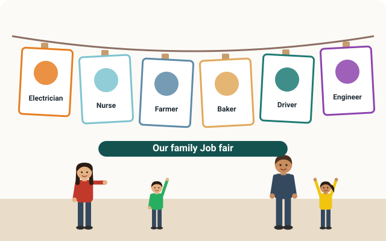
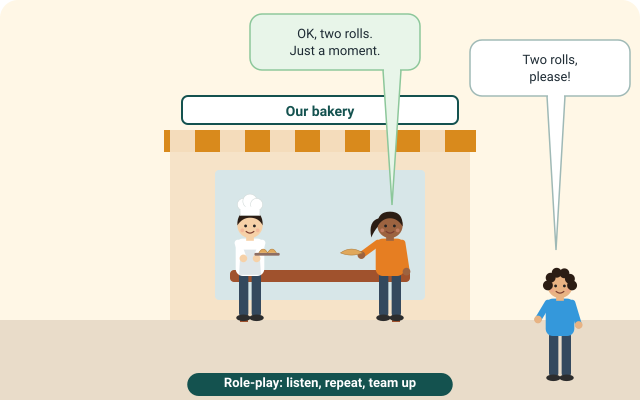

K7 · Self-directed learning and career development › Level 1 Exploring
Review: your family's Job fair
For the adult. This lesson reviews the whole course by using what was learned, not rereading it.
- Reading the lesson: 15–20 minutes. The Job fair: 30–45 minutes, for example at the weekend.
- In class: it works in a careers or life-skills lesson. Each group runs one job corner.
- You need: the Job cards, the poster from Lesson 4, string and pegs to hang the cards, and the Course review sheet.
- Do not turn the Job fair into "choosing a job". The aim is for children to know more jobs and talk about them with confidence.
1. Objectives
- Use Job cards to talk about at least 3 jobs.
- Answer 6 cross-check questions, one for each lesson of the course.
2. Retrieval warm-up
- What are the 4 steps of an interview?
- Name 2 safety rules for interviews.
Answers
- Prepare, ask and listen, say thank you, tell others.
- Someone you know; an adult present; ask permission before photos or recording; don't post online without agreement.
Review: Interviewing someone about their job.
3. Explanation
The course has 6 lessons, joined by one thread: the Job card. The diagram below sums up the whole course. Each box is one lesson. Click to review it.
The whole course in one diagram
Why review with a Job fair? When you recall and use what you learned, you remember it longer than by rereading. The Job fair makes you use all 6 lessons at once: making cards, talking about jobs, sharing tasks, keeping time.

The Job fair has 5 steps. Each step uses one lesson again:
The 5-step Job fair plan
- Collect the Job cardsCheck all 5 boxes are filled (Lessons 1, 2, 6).
- Make a Task boardWho hangs the cards, who presents, who keeps time (Lesson 4).
- Take on tasks, set a timeRepeat back your task, write the start time (Lesson 5).
- Display and talkEach person talks for 2 minutes (Lesson 6).
- Role-playPlay a job, and swap roles between boys and girls (Lessons 2, 3).
4. Workplace example
Hypothetical scenario. Nina's family holds a Job fair on Sunday afternoon. Nina (age 8) has 4 Job cards. Her brother Tom (age 12) has 3 cards and 1 interview.
The family makes a Task board: Nina hangs the cards on a string. Tom presents and keeps time. Dad talks about his own job. Mum sets up the role-play corner.

Each person talks for 2 minutes, using the frame from Lesson 6. Then the family plays "Our bakery". Nina is the baker. Tom sells the bread: he listens to the customer and repeats the order back. Dad is the customer. In the next round, everyone swaps roles.

Why this works: the family uses every lesson again: cards (Lessons 1, 2), swapping roles (Lesson 3), the board (Lesson 4), keeping time (Lesson 5), telling others (Lesson 6). Nobody has to reread an old lesson.
5. Practice
Part A. Cross-check the whole course. Answer out loud, without looking back at the lessons. Mark any question you cannot remember, and open that lesson again later.
| Question | If you can't remember, review |
|---|---|
| 1. What are the 5 boxes of the Job card? | Lesson 1 |
| 2. Name 3 skills every job needs. | Lesson 2 |
| 3. Turn "Boys can't be nurses" into a question. | Lesson 3 |
| 4. What are the 3 columns of the Task board? | Lesson 4 |
| 5. What 2 things must an early warning say clearly? | Lesson 5 |
| 6. Give an example of an open interview question. | Lesson 6 |
Cross-check answers
- Job name, what they do, where, what they use, what skills.
- Listening, speaking clearly, solving problems, working together, keeping promises, using technology.
- "What skills does a nurse need?"
- Who – What – Done by when.
- Which part may be late, and what you need.
- For example: "What makes you like this job?"
Part B. Hold the Job fair using the 5 steps in Diagram 2.
Tip for small families
Two people are enough. Each person talks about 2 jobs. Use toys or kitchen things for the role-play.
6. Self-check
Choose an answer. Every option has an explanation.
Question 1. (Lesson 1) For a tailor, what goes in the "What do they use?" box?
-
Correct. Correct. The "What do they use?" box lists tools and machines.
-
Not quite. This is what they do, so it fits the "What do they do?" box.
-
Not quite. This is where they work, so it fits the "Where?" box.
Question 2. (Lesson 2) A mechanic tells a customer to collect the bike at 5. Which skill does the mechanic need to finish on time?
-
Correct. Correct. It is one of the 6 skills every job needs.
-
Not quite. Drawing well does not help fix a bike on time.
-
Not quite. This skill has nothing to do with keeping promises.
Question 3. (Lesson 3) Your friend says: "Boys can't be nurses." Which reply helps widen their thinking?
-
Correct. Correct. A question about skills opens the job to everyone.
-
Not quite. This repeats the gender stereotype about jobs.
-
Not quite. Arguing does not help your friend learn more. Ask about skills.
Question 4. (Lessons 4 and 5) Your group's poster is due Friday. On Wednesday, your part might be late. What do you do?
-
Correct. Correct. If you say it early, the group can still help and finish on time.
-
Not quite. If you don't make it, the group finds out too late.
-
Not quite. A task you took on must be finished, or reported so the group can rearrange.
Question 5. (Lesson 6) In an interview, which question helps the person tell you more?
-
Correct. Correct. A "why" question is open and invites the person to explain.
-
Not quite. This only needs a yes or no answer.
-
Not quite. A closed question, which usually gets a short answer.
7. Reflection
The adult asks, and you answer out loud. The site saves nothing.
- Of the 6 lessons, which one can you use most at school? How?
- Which job would you like to find out more about? Who will you ask?
8. Real-world application
Spaced review. After the Job fair, repeat Part A and the Self-check on the schedule below. Each time takes only 5 minutes. Click "Mark as done" at the end of the lesson, and the site suggests dates and creates a calendar reminder file.
| When | What to do |
|---|---|
| After 1 day | The 6 cross-check questions, without looking back |
| After 3 days | Redo this lesson's Self-check |
| After 7 days | Talk about 1 job for 2 minutes |
| After 1 month | Hunt for 3 new jobs and make cards with all 5 boxes |
Going further. At upper-secondary school, you can follow the N2: Getting ready for work path. Many lessons there grow from this course: sharing group tasks, taking on tasks, telling examples.
Habits, values and character are covered on daynentang.com. Learn English at tienganhcanban.com.
9. Metadata
| skill | K7 · Self-directed learning and career development |
|---|---|
| level | Level 1 · Exploring |
| group | N1 |
| framework_map | WEF: Curiosity and lifelong learning; CSfW: 1a Manage career and work life; 2b Connect and work with others; NACE: Career and Self-Development; Teamwork; LifeComp: L3 Managing learning; S3 Collaboration (reference only) |
| original | Vietnamese version |
| updated | 2026-11-14 |
Finish the lesson
Mark it as done and the site suggests reviews after 1, 3 and 7 days. The data stays on your device only.
Suggested reviews: